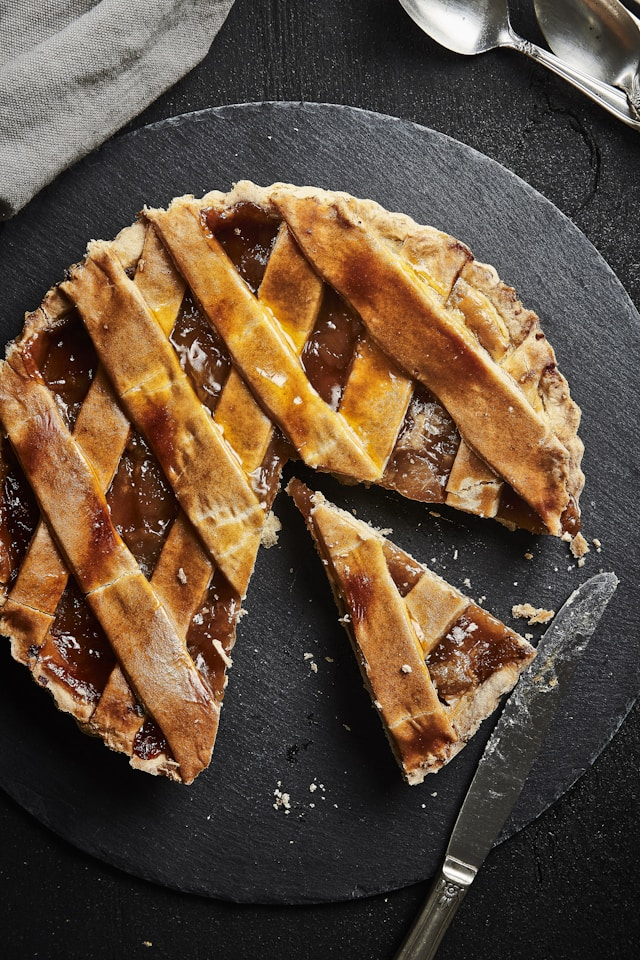

Pie

Discription
This homemade apple pie filling recipe lets you treat your family with
pies year-round.
Get a jump start on fall baking season with this apple pie filling recipe.
It makes enough delicious filling for 5 pies, so it’s perfect for freezing.
Ingredients
These are the ingredients you’ll need to make this apple pie filling recipe:
- Apples: The best apples for apple pie are firm and
sweet-tart. Granny Smith apples are always a great choice. Some bakers
prefer using Granny Smith apples in combination with a slightly sweeter
variety, such as Honeycrisp.
- Lemon Juice: Toss the sliced apples with lemon juice
to keep them from browning prematurely.
- Water: The stovetop apple pie filling starts with 10 cups of
water.
- Sugar: Of course, this recipe calls for white sugar!
You’ll need 4 ½ cups, to be exact.
- cornstarch: A cup of cornstarch thickens the filling.
- Salt: Salt enhances the flavors of the other ingredients,
but it won’t make your apple pie taste salty.
- Spices: Ground cinnamon and ground nutmeg add flavor and
warmth to the apple pie filling.
How to Make Apple Pie Filling
Here’s a brief overview of what you can expect when you can expect when you make
this homemade apple pie filling:
- Toss the apple slices with lemon juice.
- Combine the remaining ingredients in a Dutch oven and bring to a boil.
- Add apples, return to a boil, then simmer until the apples are tender.
- Freeze according to the recipe.
Home